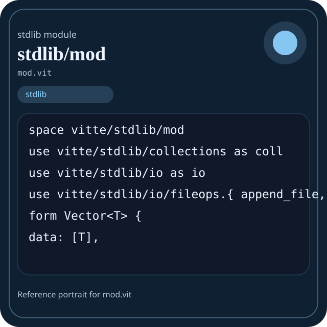

Stdlib module mod.vit
This page is a wiki-style reference for one concrete stdlib file. It explains what the file owns, where it fits in the family, and how to decide whether this is the right surface to depend on.

mod.vit.Family: stdlib
Kind: aggregation module
Page style: this reference follows the same “encyclopedic card + portrait + usage contract” logic as the keyword pages, but for stdlib modules.
Summary
- Overview
- Purpose
- Taxonomy
- Implementation profile
- Top-level API inventory
- Position in family
- Declaration map
- Representative signatures
- How to use this module
- User example
- Keyword coverage
- Source shape
- Source landmarks
- Source organization
- Complete API catalog
- Integration boundaries
- Composition guidance
- Relationship table
- Neighbor modules
Overview
| Field | Value |
|---|---|
| Path | mod.vit |
| Family | stdlib |
| Kind | aggregation module |
| Line count | 79 |
| Declared procedures | 16 |
| Declared forms/picks | 2 |
`mod.vit` is a aggregation module inside the `stdlib` family. It should be read as one focused slice of the broader family responsibility: Top-level map of the Vitte standard library and the responsibilities owned by each family.
Purpose
This file should be chosen because of responsibility, not because its name “sounds close enough”. Inside the stdlib family, it carries one focused part of the contract and keeps that responsibility separate from neighboring concerns.
- Domain values start in `core` and `strings`.
- Grouped data moves through `collections` or `data`.
- Structured export goes through `json` and `encoding`.
- Filesystem or process interaction goes through `path`, `io`, `os`, or `sysinfo`.
- Explicit runtime coordination goes through `async`, `threading`, `kernel`, or `ffi`.
Taxonomy
Think of this page as a generated encyclopedia entry rather than a hand-written tutorial. The goal is to show what kind of module this is, how dense it is, and what reading strategy makes sense before depending on it.
- Medium procedure surface: this file groups several related operations behind one namespace.
- Owns domain vocabulary: the module declares data shapes in addition to executable helpers, so its types are part of the contract.
- Narrow dependency fan-in: a small set of imports suggests a focused collaboration surface.
- Explicit export surface: the file ends with visible export declarations instead of relying only on implicit namespace discovery.
- Aggregation-oriented module: this file likely collects exports and family-level entry points more than it implements novel algorithms.
Implementation profile
This profile is inferred directly from the source text. It does not replace reading the file, but it tells you quickly whether the module is mostly declarative, loop-heavy, branch-heavy, or organized around many small exits.
| Signal | Count | What it suggests |
|---|---|---|
if | 0 | Branching density and local decision-making. |
while | 0 | Loop-heavy or iterative implementation style. |
for | 0 | Collection-style traversal at source level. |
match | 0 | Variant-driven branching or grammar-style decoding. |
let | 0 | Local state and intermediate value density. |
give | 16 | Number of explicit exit points and result shaping. |
Top-level API inventory
| Surface | Items |
|---|---|
| Procedures | vector_new, vector_push, hashmap_new, hashmap_insert, io_read_file, io_write_file, io_append_file, io_file_exists, io_create_directory, io_is_file, io_is_directory, io_copy_file |
| Forms | Vector, HashMap |
| Picks | none declared at top level |
| Constants | none declared at top level |
| Exports | * |
Imported surfaces
vitte/stdlib/collections as coll use vitte/stdlib/io as io use vitte/stdlib/io/fileops.{ append_file, copy_file, create_directory, delete_directory, delete_file, file_exists, is_directory, is_file, list_directory, move_file, read_file, write_file } form Vector
Position in family
This file is module 6 of 11 in the stdlib family when ordered by path. By procedure count it ranks 9, and by line count it ranks 9. Those ranks are useful as rough signals of breadth, not as quality judgments.
Declaration map
The declaration map turns raw source into a scan-friendly catalog. It is useful when the file is large enough that a reader wants to orient by kinds of surfaces first.
| Line | Name | Kind | Role |
|---|---|---|---|
| 1 | vitte/stdlib/mod | space | Declares the namespace that anchors this file in the stdlib tree. |
| 3 | vitte/stdlib/collections as coll | use | Imports a sibling or supporting surface used by the module. |
| 4 | vitte/stdlib/io as io | use | Imports a sibling or supporting surface used by the module. |
| 5 | vitte/stdlib/io/fileops.{ append_file, copy_file, create_directory, delete_directory, delete_file, file_exists, is_directory, is_file, list_directory, move_file, read_file, write_file } | use | Imports a sibling or supporting surface used by the module. |
| 7 | Vector | form | Introduces a structured data shape that other procedures can exchange. |
| 11 | HashMap | form | Introduces a structured data shape that other procedures can exchange. |
| 15 | vector_new | proc | Owns a concrete data shape or the operations that maintain it. |
| 19 | vector_push | proc | Owns a concrete data shape or the operations that maintain it. |
| 23 | hashmap_new | proc | Represents one top-level surface in the file contract and should be read as part of the module boundary. |
| 27 | hashmap_insert | proc | Represents one top-level surface in the file contract and should be read as part of the module boundary. |
| 31 | io_read_file | proc | Owns byte movement or host I/O interaction. |
| 35 | io_write_file | proc | Owns byte movement or host I/O interaction. |
| 39 | io_append_file | proc | Owns byte movement or host I/O interaction. |
| 43 | io_file_exists | proc | Owns byte movement or host I/O interaction. |
| 47 | io_create_directory | proc | Represents one top-level surface in the file contract and should be read as part of the module boundary. |
| 51 | io_is_file | proc | Owns byte movement or host I/O interaction. |
| 55 | io_is_directory | proc | Represents one top-level surface in the file contract and should be read as part of the module boundary. |
| 59 | io_copy_file | proc | Owns byte movement or host I/O interaction. |
| 63 | io_move_file | proc | Owns byte movement or host I/O interaction. |
| 67 | io_delete_file | proc | Owns byte movement or host I/O interaction. |
| 71 | io_delete_directory | proc | Represents one top-level surface in the file contract and should be read as part of the module boundary. |
| 75 | io_list_directory | proc | Owns a concrete data shape or the operations that maintain it. |
The table is exhaustive for top-level declarations of the selected kinds. This file declares 22 matching surfaces.
Representative signatures
These signatures are shown in source order so the page keeps the feel of a reference manual, not just a keyword cloud.
form Vector<T> {(line 7)form HashMap<K, V> {(line 11)proc vector_new<T>() -> Vector<T> {(line 15)proc vector_push<T>(vec: Vector<T>, item: T) -> Vector<T> {(line 19)proc hashmap_new<K, V>() -> HashMap<K, V> {(line 23)proc hashmap_insert<K, V>(map: HashMap<K, V>, key: K, value: V) -> HashMap<K, V> {(line 27)proc io_read_file(path: string) -> string {(line 31)proc io_write_file(path: string, content: string) -> bool {(line 35)proc io_append_file(path: string, content: string) -> bool {(line 39)proc io_file_exists(path: string) -> bool {(line 43)proc io_create_directory(path: string) -> bool {(line 47)proc io_is_file(path: string) -> bool {(line 51)proc io_is_directory(path: string) -> bool {(line 55)proc io_copy_file(src: string, dst: string) -> bool {(line 59)proc io_move_file(src: string, dst: string) -> bool {(line 63)proc io_delete_file(path: string) -> bool {(line 67)proc io_delete_directory(path: string) -> bool {(line 71)proc io_list_directory(path: string) -> [string] {(line 75)
How to use this module
Start by reading the file as an ownership boundary. Ask three questions: what enters this module, what stable types or procedures it exports, and what adjacent module should stay outside of it.
- Read
spaceand top-level imports first so the ownership boundary ofmod.vitis explicit. - Read declared forms and picks before algorithms so the data vocabulary is stable in your head.
- Traverse procedures in source order; the early helpers usually explain the naming and numeric conventions used later.
- Only after that compare neighbor modules, because the right boundary choice matters more than memorizing one helper name.
User example
This example is generated from the actual stdlib module surface. Its job is not to be the smallest snippet possible; its job is to show a realistic consumer-shaped file that exercises the module and mirrors the language keywords the module itself relies on.
space demo/mod
use vitte/stdlib/mod
form DemoState {
ready: bool,
note: string
}
proc run_example() -> DemoState {
let values = vector_push<int>(vector_new<int>(), 1)
let ready: bool = io_file_exists("README.md") or values.data.len >= 0
let count_f64: f64 = values.data.len as f64
give DemoState { ready: ready, note: "ok" }
}
export run_exampleKeyword coverage
This table makes the “all keywords of the module” requirement auditable. It compares the detected Vitte keywords in the source file with the generated consumer example above.
| Keyword | Present in module source | Used in generated user example |
|---|---|---|
space | yes | yes |
use | yes | yes |
form | yes | yes |
proc | yes | yes |
give | yes | yes |
export | yes | yes |
as | yes | yes |
The generated snippet exercises every detected Vitte keyword used by this module.
Source shape
space vitte/stdlib/mod
use vitte/stdlib/collections as coll
use vitte/stdlib/io as io
use vitte/stdlib/io/fileops.{ append_file, copy_file, create_directory, delete_directory, delete_file, file_exists, is_directory, is_file, list_directory, move_file, read_file, write_file }
form Vector<T> {
data: [T],
}
form HashMap<K, V> {
entries: [(K, V)],
}The excerpt is not meant to replace the file. It exists to make the module recognizable at first glance, the same way a Wikipedia infobox helps the reader orient before reading the whole article.
Source landmarks
Large files are easier to retain when they have visible landmarks. When the source contains explicit section banners, they are surfaced here; otherwise the first major declarations are used as anchors.
- Line 1:
space vitte/stdlib/mod - Line 3:
use vitte/stdlib/collections as coll - Line 4:
use vitte/stdlib/io as io - Line 5:
use vitte/stdlib/io/fileops.{ append_file, copy_file, create_directory, delete_directory, delete_file, file_exists, is_directory, is_file, list_directory, move_file, read_file, write_file } - Line 7:
form Vector<T> { - Line 11:
form HashMap<K, V> { - Line 15:
proc vector_new<T>() -> Vector<T> { - Line 19:
proc vector_push<T>(vec: Vector<T>, item: T) -> Vector<T> {
Source organization
When a file carries its own internal chaptering, those chapters usually reveal the intended reading order better than a flat symbol list. This section reconstructs that organization from the source itself.
File surfaces
Top-level items: 23. Procedures: 16. Data surfaces: 2. Constants: 0.
First visible names: vitte/stdlib/mod, vitte/stdlib/collections as coll, vitte/stdlib/io as io, vitte/stdlib/io/fileops.{ append_file, copy_file, create_directory, delete_directory, delete_file, file_exists, is_directory, is_file, list_directory, move_file, read_file, write_file }, Vector, HashMap, vector_new, vector_push, hashmap_new, hashmap_insert
Complete API catalog
This catalog is the exhaustive file-level index for the module. It is intentionally closer to a generated encyclopedia appendix than to a tutorial summary.
Data surfaces
| Line | Name | Signature | Role |
|---|---|---|---|
| 7 | Vector | form Vector<T> { | Introduces a structured data shape that other procedures can exchange. |
| 11 | HashMap | form HashMap<K, V> { | Introduces a structured data shape that other procedures can exchange. |
Procedures
| Line | Name | Signature | Role |
|---|---|---|---|
| 15 | vector_new | proc vector_new<T>() -> Vector<T> { | Owns a concrete data shape or the operations that maintain it. |
| 19 | vector_push | proc vector_push<T>(vec: Vector<T>, item: T) -> Vector<T> { | Owns a concrete data shape or the operations that maintain it. |
| 23 | hashmap_new | proc hashmap_new<K, V>() -> HashMap<K, V> { | Represents one top-level surface in the file contract and should be read as part of the module boundary. |
| 27 | hashmap_insert | proc hashmap_insert<K, V>(map: HashMap<K, V>, key: K, value: V) -> HashMap<K, V> { | Represents one top-level surface in the file contract and should be read as part of the module boundary. |
| 31 | io_read_file | proc io_read_file(path: string) -> string { | Owns byte movement or host I/O interaction. |
| 35 | io_write_file | proc io_write_file(path: string, content: string) -> bool { | Owns byte movement or host I/O interaction. |
| 39 | io_append_file | proc io_append_file(path: string, content: string) -> bool { | Owns byte movement or host I/O interaction. |
| 43 | io_file_exists | proc io_file_exists(path: string) -> bool { | Owns byte movement or host I/O interaction. |
| 47 | io_create_directory | proc io_create_directory(path: string) -> bool { | Represents one top-level surface in the file contract and should be read as part of the module boundary. |
| 51 | io_is_file | proc io_is_file(path: string) -> bool { | Owns byte movement or host I/O interaction. |
| 55 | io_is_directory | proc io_is_directory(path: string) -> bool { | Represents one top-level surface in the file contract and should be read as part of the module boundary. |
| 59 | io_copy_file | proc io_copy_file(src: string, dst: string) -> bool { | Owns byte movement or host I/O interaction. |
| 63 | io_move_file | proc io_move_file(src: string, dst: string) -> bool { | Owns byte movement or host I/O interaction. |
| 67 | io_delete_file | proc io_delete_file(path: string) -> bool { | Owns byte movement or host I/O interaction. |
| 71 | io_delete_directory | proc io_delete_directory(path: string) -> bool { | Represents one top-level surface in the file contract and should be read as part of the module boundary. |
| 75 | io_list_directory | proc io_list_directory(path: string) -> [string] { | Owns a concrete data shape or the operations that maintain it. |
Imports
| Line | Name | Signature | Role |
|---|---|---|---|
| 3 | vitte/stdlib/collections as coll | use vitte/stdlib/collections as coll | Imports a sibling or supporting surface used by the module. |
| 4 | vitte/stdlib/io as io | use vitte/stdlib/io as io | Imports a sibling or supporting surface used by the module. |
| 5 | vitte/stdlib/io/fileops.{ append_file, copy_file, create_directory, delete_directory, delete_file, file_exists, is_directory, is_file, list_directory, move_file, read_file, write_file } | use vitte/stdlib/io/fileops.{ append_file, copy_file, create_directory, delete_directory, delete_file, file_exists, is_directory, is_file, list_directory, move_file, read_file, write_file } | Imports a sibling or supporting surface used by the module. |
Exports
| Line | Name | Signature | Role |
|---|---|---|---|
| 79 | * | export * | Re-exports surfaces that the module wants to expose as part of its public boundary. |
Integration boundaries
Within stdlib, this file should remain focused. If a future helper changes the host boundary, scheduling boundary, or data-shape boundary, it probably belongs in a neighbor module instead of being added here by convenience.
- Family responsibility: Top-level map of the Vitte standard library and the responsibilities owned by each family.
- Family architecture role: A realistic Vitte program usually starts in `core`, grows through `collections` or `data`, crosses textual boundaries with `json` or `encoding`, touches the host with `path` or `io`, and only then reaches system-facing families like `kernel`, `ffi`, `async`, or `threading`.
Composition guidance
Choose this module when
- Choose
mod.vitwhen the main question is owned by this module rather than by transport, storage, orchestration, or user-interface code. - Domain values start in `core` and `strings`.
- Grouped data moves through `collections` or `data`.
- Structured export goes through `json` and `encoding`.
- Filesystem or process interaction goes through `path`, `io`, `os`, or `sysinfo`.
- Explicit runtime coordination goes through `async`, `threading`, `kernel`, or `ffi`.
Pause before extending it when
- Avoid extending this file when the new helper mostly changes the boundary to host I/O, runtime coordination, or foreign integration instead of staying inside
stdlib. - Check nearby modules such as
GETTING_STARTED.vitl,core_alias.vitl,datetime.vitlbefore adding convenience wrappers here. - Prefer implementing concrete behavior in leaf modules first; keep the aggregation file focused on composition and export shape.
Relationship table
This table keeps the page closer to a real encyclopedia entry: a module is easier to understand when compared with its nearest alternatives in the same family.
| Neighbor | Procedures | Data surfaces | Why compare it |
|---|---|---|---|
GETTING_STARTED.vitl | 26 | 0 | Shares the same family boundary but carries a distinct slice of responsibility. |
core_alias.vitl | 0 | 0 | Shares the same family boundary but carries a distinct slice of responsibility. |
datetime.vitl | 138 | 16 | Shares the same family boundary but carries a distinct slice of responsibility. |
graphics.vitl | 5 | 0 | Shares the same family boundary but carries a distinct slice of responsibility. |
memory.vitl | 137 | 16 | Shares the same family boundary but carries a distinct slice of responsibility. |
os.vitl | 167 | 30 | Shares the same family boundary but carries a distinct slice of responsibility. |
regex.vitl | 44 | 9 | Shares the same family boundary but carries a distinct slice of responsibility. |
runtime.vitl | 92 | 37 | Shares the same family boundary but carries a distinct slice of responsibility. |